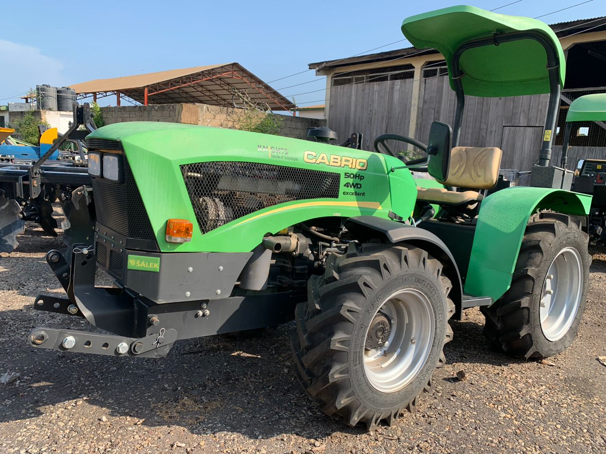
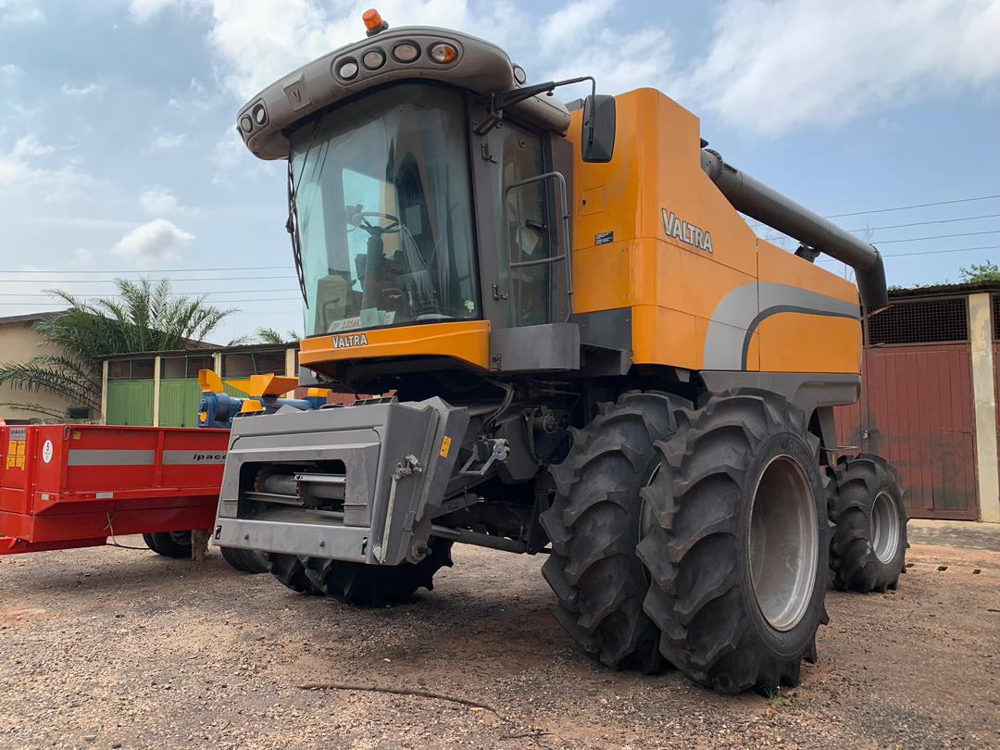
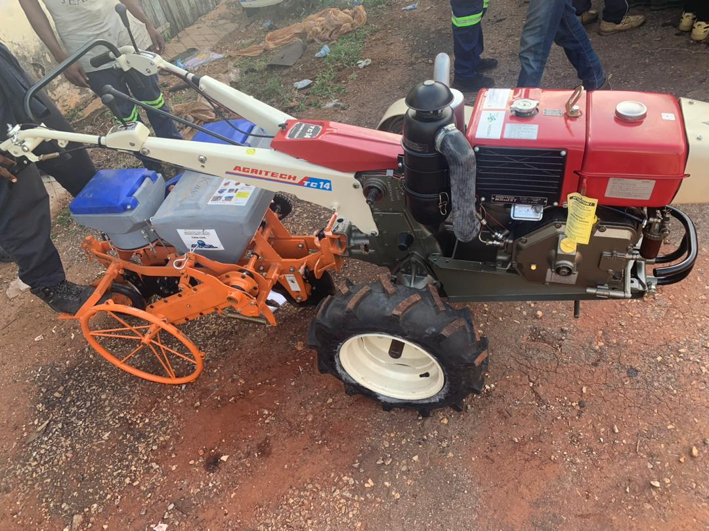
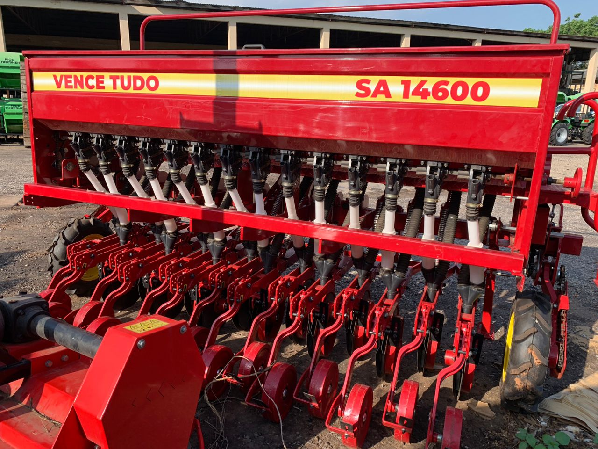
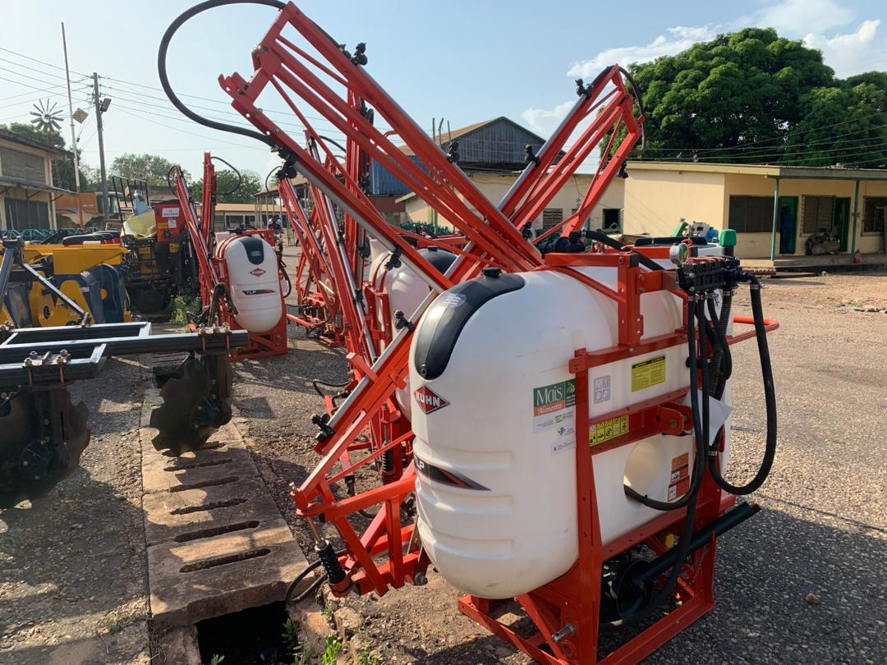
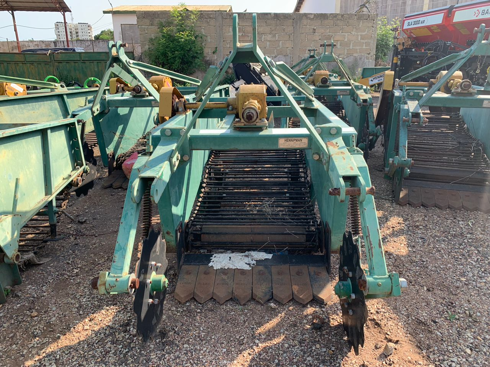
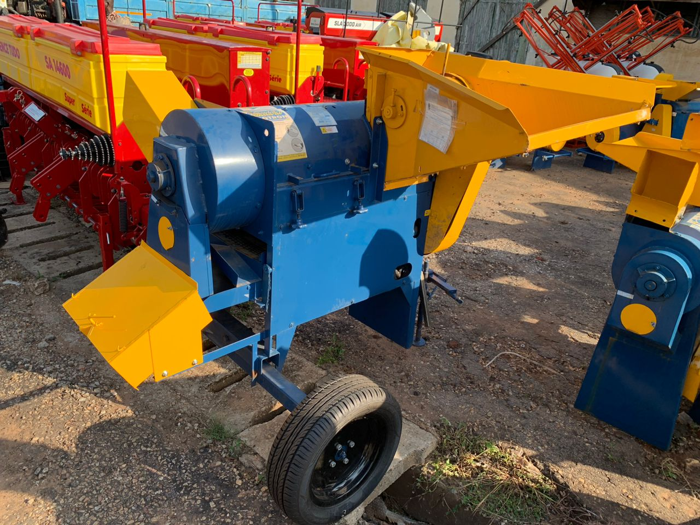

Introduction
Agricultural Engineering Machines and Agricultural Mechanisation deals with manufacture,distribution and the operation of all type of tools, implements, and machines for agricultural development. Equipment used on the farm may be divided into two main categories, that is, farm power and farm machinery. Farm machinery generally covers those tools, implements and machines used on the farm. A machine may be as simple as a wedge or as complex as a combine harvester. The term, however, normally refers to tractors and other engine- powered equipment. Agricultural mechanisation employs a combination of three main sources of power: human, animal and mechanical/engine. This gives rise to three broad levels of agricultural mechanisation technology classified as hand-tool technology (HTT), draught-animal technology (DAT) and mechanical-power or engine-power technology (EPT). Other sources of power may include electricity and various forms of renewable energy sources such as solar energy, biogas, biomass and wind energy.
Agricultural Machinery
It is basically the machines used for agricultural development. They mechanical structures and implements used in farming.Mechanical power is available through tractors, power tillers and oil engines. These machines have mechanical power source, it takes the power from the engine. Well some takes the power from elctricity, that is used for running electrical motors and the operating cost remains constant. They are used for specific stages of agricultural processes, that is :- Clearing the land
- Tilling the land
- Planting
- Application of fertilizers and pesticides
- Irrigation
- Crop harvesting
- Post-harvesting
- Storage
Machines Used In Agricultural Farming
-
TRACTOR Tractor and its mode of attachments
tractor is a powerful vehicle machine used in farming and construction. It's designed to provide the necessary power and traction to pull heavy loads, perform various task and also operate on different types of machinery. Tractors typically have large rear wheels for better traction and are equipped with a variety of attachments and implements for different purposes, such as plowing, planting, and towing. They play a crucial role in modern agriculture and are essential for many farming operations. Tractors are incredibly versatile machines that are used in a wide range of tasks. They come in different sizes and configurations to suit various needs. Some tractors are specifically designed for agricultural purposes, such as tilling the soil, planting crops, or harvesting. Others are used in construction sites for tasks like excavating, grading, or hauling materials. Tractors can also be found in forestry, landscaping, and even in recreational activities like tractor pulls or tractor racing. They are powerful workhorses that make many tasks easier and more efficient. -
COMBINE HARVESTER The combine harvester and its operation
A combine harvester, often referred to as a combine, is a versatile agricultural machine used for harvesting crops, particularly grains like wheat, corn, and soybeans. It combines several harvesting operations into one machine, including cutting the crop, threshing (separating the grain from the stalk), and cleaning the grain. Combines are equipped with a cutting header at the front that cuts the crop, which is then fed into the machine for processing. The grain is collected in a grain tank, while the remaining straw and chaff are expelled from the back of the machine. Combines have greatly increased the efficiency and speed of harvesting, reducing the labor required and allowing farmers to harvest large areas of crops in a shorter time. -
POWER TILLER(Single Row Planter Mounted) Operation of power tiller(detail)
A power tiller, also known as a rotary tiller or a rotavator, is a versatile agricultural machine used for soil preparation. It is designed to break up and cultivate the soil, making it ready for planting. Power tillers are equipped with rotating blades or tines that dig into the soil, breaking it apart and turning it over. This helps to aerate the soil, remove weeds, and create a loose and fertile seedbed. Power tillers are commonly used in small-scale farming and gardening, as they are more compact and maneuverable compared to larger tractors. They can be attached to the back of a tractor or operated as standalone machines. Power tillers are great tools for preparing the soil and ensuring optimal conditions for planting crops. power tillers are pretty handy machines, especially for small-scale farming and gardening. They are like mini tractors that help break up and cultivate the soil. With their rotating blades or tines, power tillers dig into the soil, loosening it up and preparing it for planting. They make the soil more fertile and create a nice seedbed for your crops. Power tillers are great for tasks like weeding, mixing in organic matter, and leveling the ground. -
SEED PLANTER The working process of a planter
A planter is a farming implement used to sow seeds in the soil. It is designed to precisely place seeds at a specific depth and spacing, ensuring optimal conditions for germination and plant growth. Planters come in various types and sizes, ranging from manual hand planters to mechanized seed drills. They can be attached to tractors or operated as standalone machines. Planters are commonly used in agriculture to efficiently and accurately plant crops like corn, soybeans, or vegetables. By using a planter, farmers can save time and labor while achieving consistent and uniform crop establishment. It's an essential tool for modern farming, a planter is basically a super helpful tool that farmers use to sow seeds in the soil. It's like a specialized machine that takes care of planting seeds in a precise and efficient way. You know, it's all about getting those seeds in the ground at just the right depth and spacing for optimal growth. Planters come in different sizes and types, from manual ones that you can operate by hand to fancy mechanized ones that attach to tractors. They're a game-changer in agriculture, making the planting process faster and more accurate. With a planter, farmers can sow crops like corn, soybeans, and veggies with ease. -
BOOM SPRAYER The boom sprayer and its operations
A boom sprayer is a piece of equipment that helps apply pesticides, herbicides, or fertilizers to crops. It consists of a tank to hold the liquid solution and a set of long arms, called booms, that extend horizontally. These booms have nozzles along their length, which spray the solution onto the crops as the sprayer moves through the field. The boom sprayer allows for efficient and uniform application, ensuring that the crops receive the necessary treatments. It's a handy device for maintaining crop health and maximizing yield, One important component is the tank, which holds the liquid solution. It can vary in size depending on the capacity needed for the specific spraying job. Then we have the booms, which are long arms that extend horizontally from the sprayer. These booms have multiple nozzles attached to them, which spray the solution onto the crops. The length of the booms can also vary, allowing for efficient coverage of the field. Additionally, boom sprayers have pumps and valves that control the flow of the liquid and regulate the pressure for optimal spraying. -
CASAVA HARVESTER Working process of a casava harvester
It's designed specifically to harvest cassava roots efficiently. The harvester typically has a set of rotating blades or diggers that dig into the soil and loosen the cassava roots. Then, there are conveyor belts or chains that lift the harvested roots out of the ground and transport them to a collection area. This mechanized process helps save time and labor compared to manual harvesting methods. Cassava harvesters are especially useful for large-scale cassava farms where there's a need to harvest a significant amount of cassava quickly, That's an interesting piece of equipment used in cassava farming. the cassava harvester works by using rotating blades or diggers to loosen the cassava roots from the soil. These blades are attached to a machine that moves through the field, digging into the ground as it goes. As the blades rotate, they cut through the soil and separate the cassava roots from the plant. Once the roots are loosened, conveyor belts or chains come into play. They lift the harvested roots out of the ground and transport them to a collection area, where they can be gathered and processed further. It's a pretty efficient process that saves a lot of time and effort compared to manual harvesting -
MAIZE THRESHER The maize thresher and its operation
It's a handy machine used to separate the kernels from the maize cob. The thresher typically consists of a drum or cylinder with small openings. The maize cobs are fed into the machine, and as the drum rotates, the kernels are separated from the cob by the openings. The separated kernels then fall through the openings while the remaining cob is discharged from the machine. Maize threshers are quite efficient and save a lot of time and effort compared to manual threshing. They are widely used in maize farming to streamline the process of harvesting and preparing maize for consumption or further processing. The maize thresher works by using a rotating drum or cylinder with small openings. The maize cobs are fed into the machine, and as the drum rotates, the kernels are separated from the cob through these openings. The separated kernels fall through the openings, while the remaining cob is discharged from the machine. It's a pretty efficient process that saves a lot of time and effort compared to manual threshing.
IMPORTANCE OF AGRICULTURAL MACHINERY
Agricultural mechanization is a term used to describe the process of using machinery and equipment in agricultural activities. It involves the adoption of various technologies and machines to perform tasks that were traditionally done manually. Agricultural mechanization has numerous benefits, such as increased productivity, improved efficiency, reduced labor requirements, and enhanced crop quality. By mechanizing tasks like plowing, planting, harvesting, and processing, farmers can save time and effort while achieving higher yields. It also helps address labor shortages in agriculture and allows farmers to scale up their operations. Overall, agricultural mechanization plays a vital role in modernizing and optimizing farming practices where by agricultural machinery plays a crucial role in modern farming practices. It helps increase efficiency, productivity, and overall agricultural output. With the help of machinery like tractors, harvesters, and threshers, farmers can save time and labor, allowing them to cover larger areas and harvest crops more quickly. This not only increases their productivity but also reduces the physical strain on farmers. Agricultural machinery also enables precision farming, where farmers can apply fertilizers, pesticides, and irrigation in a targeted manner, optimizing resource usage and minimizing environmental impact. Overall, agricultural machinery is essential for sustainable and efficient farming practices in today's world. Certainly, let's delve even further into the additional aspects of each point:
Increased Productivity:
Crop Diversity: Mechanization allows farmers to diversify their crops more easily. With efficient machinery, they can cultivate a variety of crops in a single season, leading to crop rotation and improved soil health.Precision Seeding: Mechanized seed drills and planters enable precise spacing and depth of seed placement, optimizing germination rates and ensuring uniform crop emergence.
Quick Response to Market Demand: Rapid harvesting and processing, facilitated by mechanization, enable farmers to respond swiftly to market demand fluctuations. This responsiveness can lead to better prices and increased market share.
Cost Efficiency:
Long-Term Savings: While initial machinery costs can be high, the long-term savings on labor costs, reduced drudgery, and increased efficiency often outweigh these initial investments, contributing to the overall economic sustainability of the farm.Energy Efficiency: Modern machinery is designed for energy efficiency, reducing fuel consumption and associated costs. This is especially relevant with advancements such as precision farming, where inputs are optimized for maximum output, minimizing waste.
Maintenance Economics: Properly maintained machinery can have a longer operational life, reducing the frequency of replacements and the associated capital expenditures.
Timely Operations:
Weather Mitigation: Mechanization allows farmers to work efficiently during short weather windows, such as avoiding rain during harvest. This flexibility helps mitigate the impact of adverse weather conditions on crop quality.Seasonal Management: Timely operations contribute to effective seasonal management. For example, mechanized planting ensures that crops are in the ground at the beginning of the growing season, maximizing the time available for growth.
Precision Agriculture:
Resource Optimization: Precision agriculture, enabled by mechanization, optimizes the use of resources like water and fertilizers. This not only reduces costs but also mitigates environmental concerns related to over-application and runoff.Data-Driven Decision-Making: Sensors and data analytics in mechanized farming provide real-time insights into crop health and field conditions. Farmers can make informed decisions on irrigation, fertilization, and pest control based on this data, leading to more sustainable and efficient practices.
-Environmental Sustainability: By minimizing the use of inputs through precise application, mechanization contributes to environmentally sustainable farming practices, reducing the ecological footprint of agriculture.
Improved Working Conditions:
Attracting Skilled Labor: Mechanization attracts a more skilled and technologically inclined workforce to agriculture. This shift in the labor force brings new perspectives and expertise, contributing to the overall modernization of the agricultural sector.Diversification of Roles: With routine and physically demanding tasks automated, farmers can diversify their roles. They can focus on tasks that require creativity, critical thinking, and decision-making, fostering a more engaging and satisfying work environment.
Safety Benefits: Mechanization enhances safety by reducing exposure to hazardous tasks. For instance, the use of machinery in harvesting reduces the risk of injuries associated with manual harvesting tools.
In essence, mechanization not only addresses immediate challenges in agriculture but also sets the stage for sustainable, efficient, and innovative farming practices that can meet the demands of a rapidly changing global agricultural landscape.